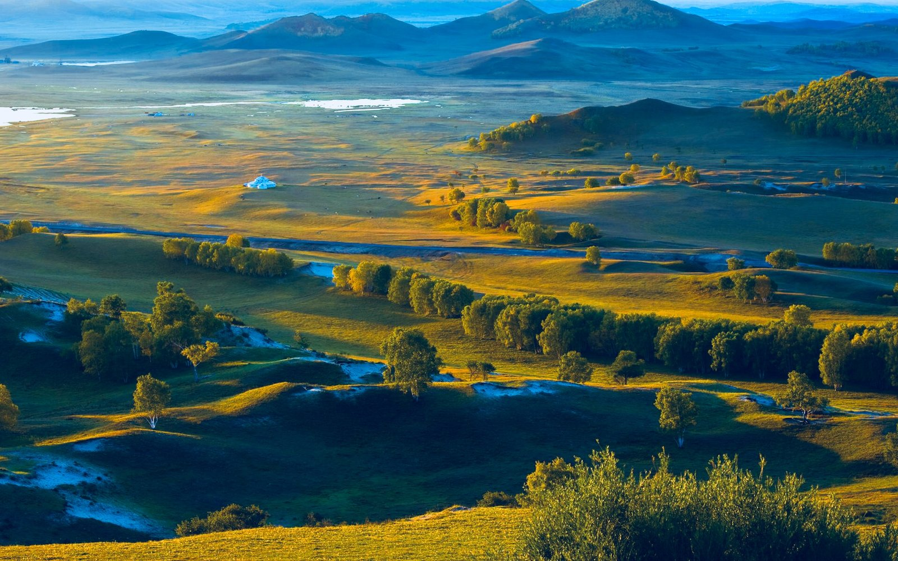

D1 · 09/25
一路北上｜新沂烧烤，临沂落脚
泰州 → 新沂 → 临沂 · ≈430km
吃完烧烤继续赶路，在临沂结束第一天行程，好好睡了一晚。
天气
🌧 雨夜赶路 · 泰州→新沂→临沂 · 19~23℃
已完成 ✓
已完成 ✓
吃什么
新沂烧烤
羊肉串烤羊排烙馍
住哪里
临沂（已住宿 ✓）。
轻松度 ★★☆☆☆重点：赶路
塞罕坝 · 乌兰布统 · 克旗景观线。固定锚点 + 弹性支线，把秋天住进来。
泰州 → 新沂 → 临沂 → 唐山（赶路完成）→ 塞罕坝 → 乌兰布统 → 热水塘 → 黄岗梁 → 阿斯哈图 → 达达线 → 达里湖（固定主线）→ 锡林浩特 → 正蓝旗 / 浑善达克 → 多伦（条件延伸，看天开不开） → 10/04 强制南返 → 10/05 苏北/淮安 → 10/06 泰州
阶段一·赶路（已完成）：泰州→新沂→临沂→唐山｜阶段二·坝上核心：塞罕坝→乌兰布统｜阶段三·克旗核心：热水塘→黄岗梁→阿斯哈图→达达线→达里湖｜阶段四·奖励延伸：条件允许才去锡林浩特→正蓝旗/浑善达克→多伦，否则直接南返。10/04 起强制返程，不再北上。
好天气留给风景，坏天气留给转场；10/04 强制南返，10/06 从容到家
含 D6 / D8 机动，单日最短 80km、最长 480km
塞罕坝林海 · 乌兰布统草原 · 克旗三线（热阿 / 达达 / 黄岗梁）
固定主线：塞罕坝森林（D3–D4）→ 乌兰布统草原（D4–D5）→ 热水塘恢复（D6）→ 克旗完整穿越（D7）→ 达里湖。条件延伸：D8 决策是否北上锡林浩特——奖励关卡，不是 KPI。
泰州 → 新沂 → 临沂 → 唐山，南北位移结束。
泰州 → 新沂 → 临沂 · ≈430km

临沂 → 唐山 · ≈590km

唐山 → 围场 → 御道口 → 塞罕坝 · ≈410km · 5h

塞罕坝 → 乌兰布统 · ≈80km · 1.5h
塞罕坝森林、乌兰布统草原、克旗景观穿越——路线骨架固定，节奏由天气决定。
每天晚上重新检查未来两天：降雨 / 降雪 / 雨夹雪 / 风力 / 能见度 / 最低温 / 道路结冰风险，再决定：
乌兰布统完整日（天气尚可）｜热水塘恢复日（坏天气消耗/疲惫）｜克旗穿越日（能见度好、无结冰）｜是否开启锡林浩特支线（D8 决策）。
日期只是参考，顺序可以互换——好天气留给风景，坏天气留给转场。
※ 3 天以后的预报只作趋势参考，具体路线以前一晚更新为准。

乌兰布统 · ≤50km · 早上看天定 A/B

热水塘休整 · 周边短途可选

热水塘 →（热阿线）→ 黄岗梁 → 阿斯哈图 →（达达线）→ 达里湖
锡林浩特是奖励关卡：10/02 决策开不开；10/04 强制南返、10/05 推进苏北、10/06 短程到家——回程永远留安全余量。

达里湖 → 锡林浩特（开启）或 → 正蓝旗/多伦（不开）

支线A：锡林浩特→正蓝旗→浑善达克→多伦 ｜ 支线B：多伦/正蓝旗→张家口方向

多伦/张家口 → 华北平原南段 · 尽量往南
华北南部 → 淮安/苏北 · ≈700~800km · 高效返程

淮安/苏北 → 泰州 · ≈190km · 2~2.5h
每一站的代表味，按顺序吃过去。

| 站点 | 必吃 |
|---|---|
| 新沂 | 烧烤（羊肉串、烤羊排配烙馍） |
| 唐山北/遵化 | 唐山烧鸡、遵化饹馇 |
| 塞罕坝 | 坝上铁锅炖、柴鸡炖蘑菇 |
| 乌兰布统 | 手把肉、烤羊腿、涮羊肉 |
| 热水塘 | 温泉酒店晚餐、达里湖华子鱼 |
| 克旗（穿越日） | 阿斯哈图农家菜、达里湖鱼宴 |
| 锡林浩特（若去） | 涮羊肉、奶食、蒙古火锅 |
| 回程（10/04–05） | 服务区正餐为主 / 淮安长鱼面 |
天气、加油、穿衣、路况——坝上不同于平原自驾。
本次行程预报（09/26 晚更新，Open-Meteo）：D3 上坝日午后转阴；坝上核心期 -3~14℃、多大风（9/30 达 6 级）；10/02–10/03 达里湖—多伦一带预报小阵雪，直接影响锡林浩特支线决策。3 天后仅作趋势参考，以前一晚更新为准。雨天看森林、晴天看草原公路；大风天减少长时间户外。
进坝前加满；坝上和草原乡镇加油站少、营业时间不定，见站就加。出发前查备胎和胎压。
按预报备衣：坝上核心期白天最高 3~14℃、夜间最低 -3℃，9/30 大风体感更低——羽绒服 + 抓绒 + 防风壳全套，帽子手套围巾都带上；赶路段和平原段白天 20℃+，洋葱式穿脱。
区间测速多，别超速；草原土路雨天勿硬闯（蛤蟆坝—小河头尤其）；9/15–11/15 正蓝旗一带防火戒严，只走开放公路与正规景区；非赶路日每天车程控制在 5h 内，两人轮换驾驶。
点一下即标记完成（本地生效，刷新保留）。